- Date: January 2019 - April 2019
- Role: UX Designer
- Work Setting: Team of 2
My design team was tasked with merging of two of IBM's key strategic projects, IBM Multicloud Manager and IBM Cloud Private, into a single unified solution. Over several months, my task was to design a unified information architecture that would glue the two products together into one cohesive solution. The importance of the project and its many stakeholders made it a challenging task that required me to use research and quick iterations, in order to deliver a solution in time. My work was done under NDA, so certain details have been excluded.
IBM Cloud Private (ICP) has been IBM's success cloud story in the recent years, with the project being a key component of IBM's Hybrid Cloud strategy. The platform is based on the emerging Kubernetes cloud management technology. ICP is a single-cloud solution, and as IBM recognized the need for our customers to manage multiple clouds, the company released its multicloud manager solution. So far so good, but IBM Multicloud Manager needs to manage clouds (aka clusters in Kubernetes world) that are of the flavor IBM Cloud Private, among others. The two products fit very well in terms of a functionality, but they were designed by two different teams and were never meant to be used as a single cohesive solution. That is why my team was tasked with redesigning the solution as one unified experience.
There are two primary personas that we focused on during the merge projecte. Todd is a systems administrator, who would use the platform to provision and setup clouds/clusters. Jane, the developer, is responsible for developing and deploying workloads (like applications) to the provisioned clouds. As both personas represent important user groups for our platform, we needed to consider the key scenarios for both personas, and ensure that our platform is designed effectively.
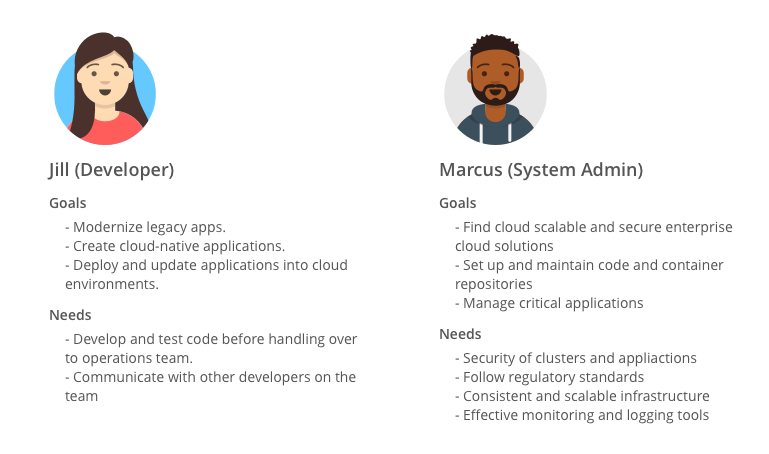
{kind=link}
We had to handle four distinct overarching user scenarios. We had to ensure that all four scenarios were accounted for in the redesigned user experience. Here are the scenarios for which we had to ensure smooth experience:
- Existing IBM Cloud Private customers
- Existing IBM Multicloud Manager customers
- New customers for the redesigned platform with a single cluster
- New customers for the redesigned platform with multiple clusters
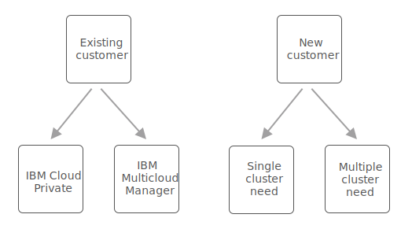
One of the biggest IA challenges was creating a unified main menu. To begin unravelling this problem, we ran open card sorts and and tree tests. These tests gave us a baseline of how the two IAs were performing with users from our target audience.
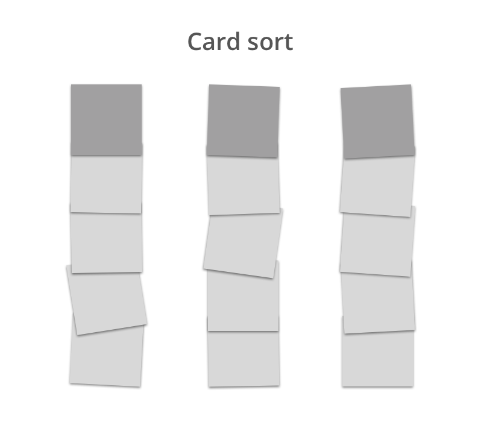 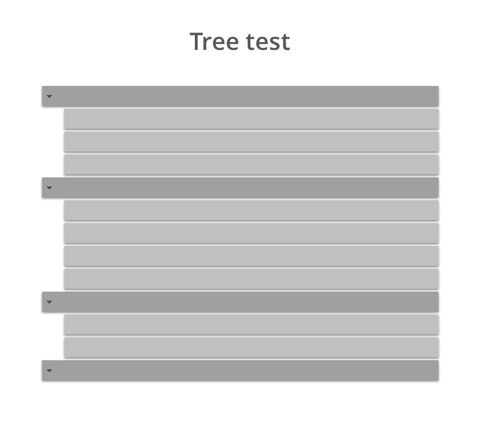
The tests revealed shortcomings of the two individual information architectures and suggests potential ways that menu items could be grouped. After we synthesized and analyzed our research results, we constructed a merge IA solution that was aided by the insights we gathered. Then, we conducted 2x rounds of tree test research with the updated architecture, in order to get it in a good place, where we had confidence that it works for our customers.
IBM Cloud Private
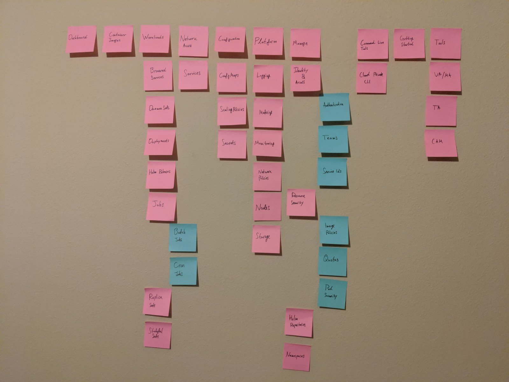{kind=link}
IBM Multicloud Manager
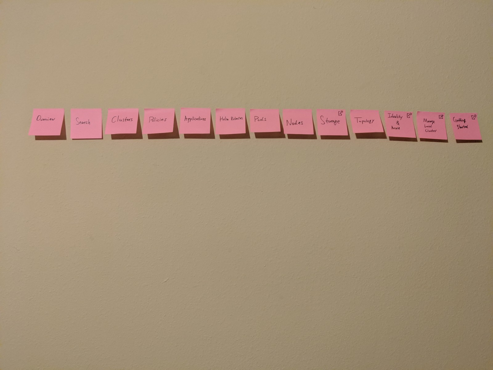{kind=link}
New combined design
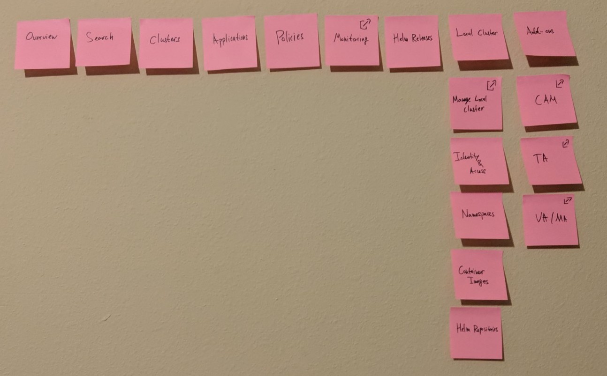{kind=link}
IBM Cloud Private + IBM Multicloud Manager shared header
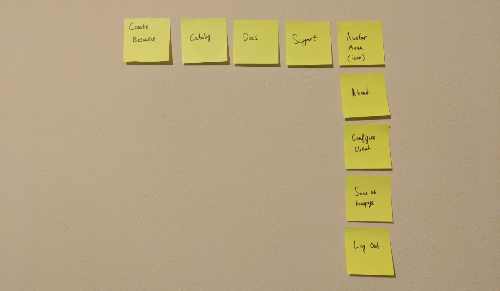{kind=link}
New combined design
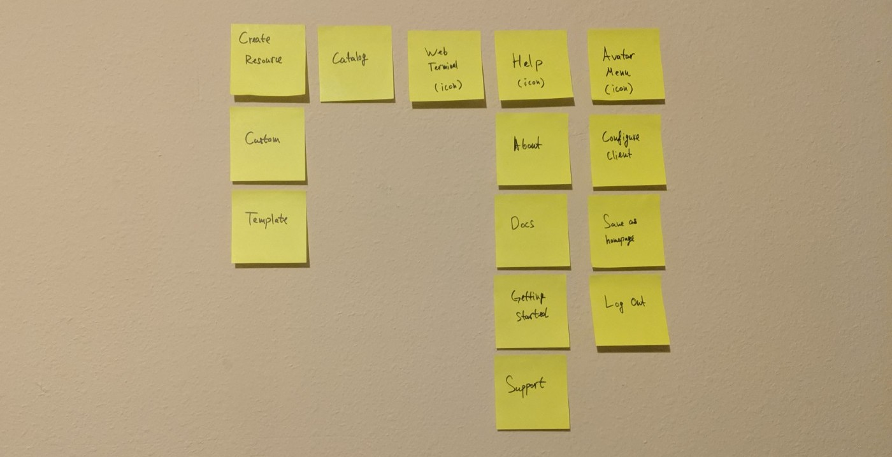{kind=link}
One of the major challenges of the project was that we had to align a lot of stakeholders that represented the various perspectives from both the IBM Cloud Private and IBM Multicloud Manager teams. Product managers, engineers, designers, and executives all had to agree on what the new information architecture would look like. I had to ensure that everyone was happy, while still managing to keep the discussion focused on the experience for our customers. As the new IA was inevitably going to pose technical challenges, we had to demonstrate great patience and align every key stakeholder to our vision.
The alignment did not come easy, as we had to present to multiple stakeholder teams. We also had to also make a number of tradeoffs, in order to ensure that deadlines are met and the stakeholders are aligned. During this phase of the project, I had to make iterations of the IA (using Mural) and get feedback a number of times. Finally, we were able to arrive at a solution that satisfies the technical, business and usability requirements we had as a collective group.
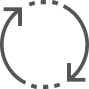
Next, we prototyped the new architecture of the proposed merged product. At this stage we focused mostly on the IA and only did the bare minimum to redesign the details of all the individual screens and pieces. We approach was that we need to align on how the pieces work together first, before we dive deep into all the details for each screen.
Header design
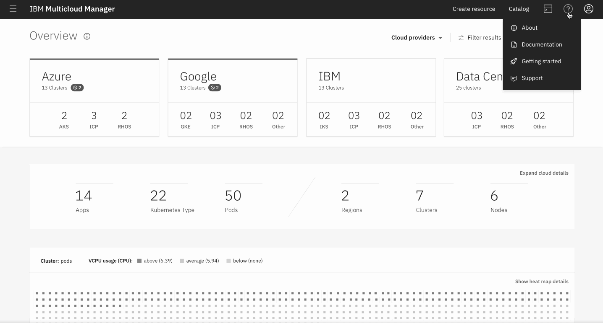Menu design
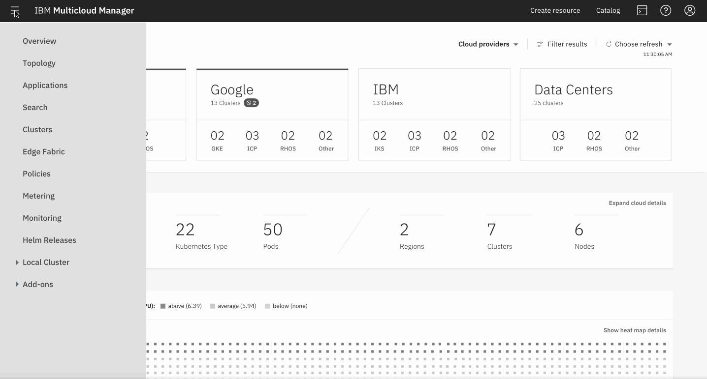I learned many lessons during this project, but the following stand out as key takeaways:
- Aligning stakeholders with conflicting priorities can be a great challenge that requires one to be very patient and empathetic.
- When dealing with multiple stakeholders, getting decisions in writing is key. People can change their minds or be forgetfully of what they committed to.
- Open card sorting might not bring value if the users don't fully understand all the items they are sorting.
- Ask for forgiveness not permission. If I didn't practice that, it would have taken me much longer to complete the work with the great number of stakeholders we have at IBM
Though the unified product is now live in production, its usage over time will be the criteria for how effectively it was designed. The information architecture will continue to evolve and meet the needs of our customers. In many ways, how we observe our users going forward and how we react to their needs is even more important than what we did during our first release.